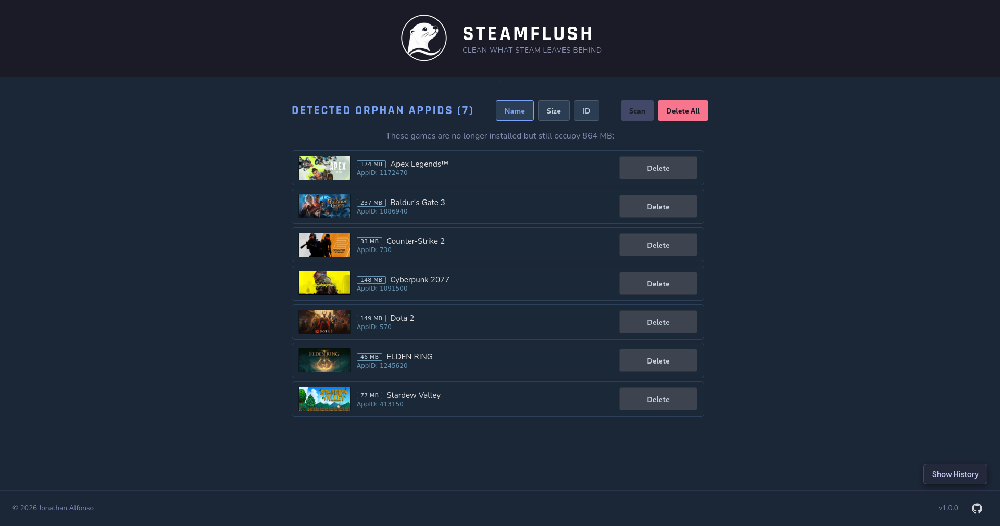
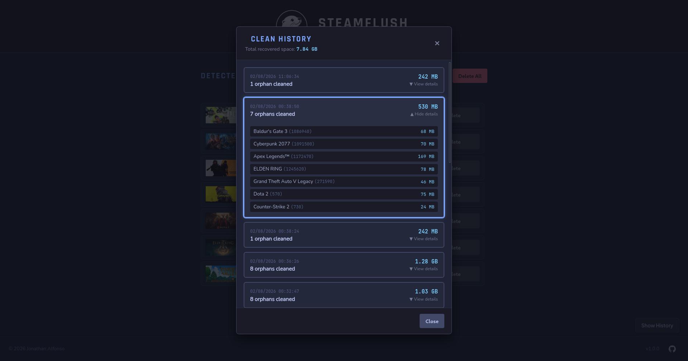
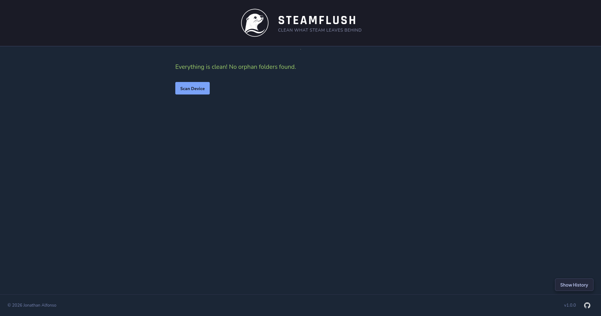

SteamFlush
SteamFlush is a lightweight, open-source desktop utility built with Go and Wails to help you reclaim disk space by safely removing orphaned shader caches from your Steam library on Linux and Steam Deck.
Screenshots

Main Window

Clean History

System Clean
Key Features
- Automatic Detection: Scans your Steam library to identify leftover shader cache directories from uninstalled games.
- Safe & Transparent: Preview associated games and directory paths before taking any destructive action.
- Fast & Lightweight: Native binary execution with low memory usage and instant startup.
- Flatpak Ready: Easily install and update via Flatpak or standalone Linux binaries.
How It Works
- Scan: SteamFlush automatically detects your Steam installation paths and scans for orphaned shader caches.
- Review: Inspect the list of uninstalled games and check how much disk space you can recover.
- Clean: Safely delete selected cache folders in a single click.
Installation
Flatpak
Download the .flatpak bundle directly from the releases page and install it via your software center or command line:
flatpak install steamflush.flatpak
Direct Download
Grab the pre-compiled binary directly from the GitHub Releases page.
Frequently Asked Questions
Is it safe to delete shader caches?
➔ Yes. Shader caches are auto-generated. Deleting caches for uninstalled games frees up disk space without affecting your installed games or save files.
Does it support secondary drives and SD cards?
➔ Yes, SteamFlush automatically scans custom Steam library folders across all mounted drives and SD cards.
Will Steam regenerate shader caches if I reinstall a game?
➔ Yes. If you reinstall a game, Steam will automatically download or compile the necessary shader cache files again.
Can SteamFlush touch my save files or game configurations?
➔ No. SteamFlush strictly targets the shadercache directories and ignores save data, compatdata (Proton prefixes), or configuration files.
Does SteamFlush require root permissions?
➔ No. SteamFlush operates entirely in user space within your user’s write permissions, making it completely safe for your system.